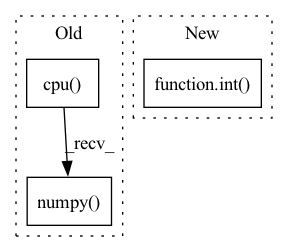

Pattern ID :25761
Before Change
fig, axes = plt.subplots(len(traces_to_show) + 1, 1, figsize=(15, 8))
else:
assert len(axes) == len(traces_to_show) + 1, f"axes must have length {len(traces_to_show) + 1}"
axes[0].plot(errors.detach().cpu().numpy() )
axes[0].set_xlabel("Time [-]")
axes[0].set_ylabel("Squared Error [-]")
axes[0].set_title(title)After Change
if plot_error_quad:
traces_to_show.remove("error_quad")
n_plot = len(traces_to_show) + int( plot_error_quad)
if fig is None or axes is None:
fig, axes = plt.subplots(n_plot, 1, figsize=(15, 8))
else:
assert len(axes) == n_plot, f"axes must have length {len(traces_to_show) + 1}"In pattern: SUPERPATTERN
Frequency: 3
Non-data size: 3
Instances Fragment ID: 78005814
Project Name: neurotorch/neurotorch
Commit Name: 53f1424222bf470ccfed91290df8c9e1ac3e616b
Time: 2022-11-11
Author: 50332514+JeremieGince@users.noreply.github.com
File Name: src/neurotorch/visualisation/time_series_visualisation.py
M Class Name: Visualise
N Class Name: Visualise
M Method Name: plot_timeseries_comparison(10)
N Method Name: plot_timeseries_comparison(10)
M Parent Class:
N Parent Class:
M File Name: src/neurotorch/visualisation/time_series_visualisation.py
N File Name: src/neurotorch/visualisation/time_series_visualisation.py
M Start Line: 411
M End Line: 467
N Start Line: 412
N End Line: 481
Before Change
for i in range(self.num_hadamard):
vec = self.irht(vec, int(seed + (self.num_hadamard - 1) - i))
return (scale * vec)[:int(dim)].cpu().numpy()
// packing the quantization values to bytes
def to_bits(self, int_bool_vec):
After Change
for k in range(2, max(metadata.keys()) + 1, 2):
scale = metadata[k]
dim = int( metadata[k + 1])
vec.append(self.decompress_slice(bins[curr_index:curr_index + dim], scale, dim, seed))
curr_index += dim
vec = torch.cat(vec) Fragment ID: 78005815
Project Name: intel/openfl
Commit Name: c10577cb32201c45846d920f871e4bcab76e37ed
Time: 2023-01-13
Author: 30897761+yanivbi@users.noreply.github.com
File Name: openfl/pipelines/eden_pipeline.py
M Class Name: Eden
N Class Name: Eden
M Method Name: decompress(3)
N Method Name: decompress(5)
M Parent Class:
N Parent Class:
M File Name: openfl/pipelines/eden_pipeline.py
N File Name: openfl/pipelines/eden_pipeline.py
M Start Line: 252
M End Line: 260
N Start Line: 337
N End Line: 354
Before Change
// Cal PSNR
total_psnr += 10. * torch.log10(1. / torch.mean((sr_tensor_y - hr_tensor_y) ** 2))
sr_image_y = sr_tensor_y.mul_(255.0).cpu().squeeze_(0).squeeze_(0).numpy()
sr_image = np.array([sr_image_y, bic_ycbcr[..., 1], bic_ycbcr[..., 2]]).transpose([1, 2, 0])
sr_image = np.clip(imgproc.convert_ycbcr_to_rgb(sr_image), 0.0, 255.0).astype(np.uint8)
sr_image = Image.fromarray(sr_image)
sr_image.save(sr_image_path)After Change
print(f"Processing `{os.path.abspath(hr_image_path)}`...")
lr_image = Image.open(lr_image_path).convert("RGB")
bic_image = lr_image.resize([int( lr_image.width * config.upscale_factor) , int(lr_image.height * config.upscale_factor)], Image.BICUBIC)
hr_image = Image.open(hr_image_path).convert("RGB")
// Extract Y channel lr image data Fragment ID: 78005819
Project Name: lornatang/espcn-pytorch
Commit Name: 3d7da32ace2da2b908bad2a32243b464f206e72a
Time: 2021-11-30
Author: liuchangyu1111@gmail.com
File Name: validate.py
M Class Name: AnonimousClass
N Class Name: AnonimousClass
M Method Name: main(0)
N Method Name: main(0)
M Parent Class:
N Parent Class:
M File Name: validate.py
N File Name: validate.py
M Start Line: 65
M End Line: 95
N Start Line: 63
N End Line: 88